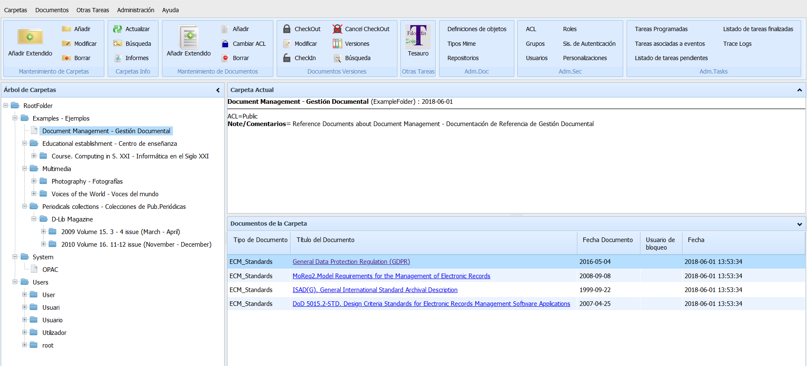
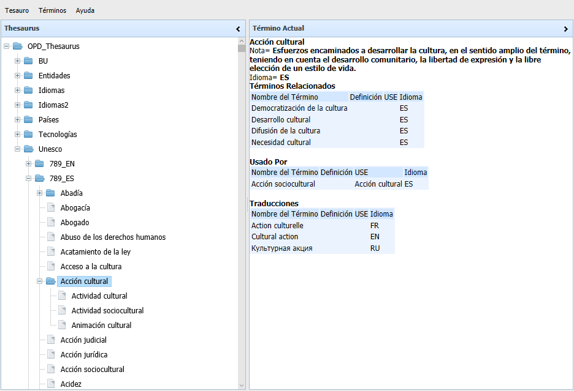

OpenProdoc
 OpenProdoc: Gestor Documental English
OpenProdoc: Gestor Documental English 
OpenProdoc 3.0.3
OpenProdoc es un gestor documental, es decir, un programa para manejar documentos y compartirlos entre los usuarios, incluyendo una ficha descriptiva de cada documento para poder describirlo y clocalizarlo. Todo ello agrupado en carpetas / expedientes, que contienen los documentos, y con una capa de seguridad por lo que cada usuario accede a los documentos permitidos. Los documentos pueden buscarse por metadatos o por palabras del contenido, como en cualquier buscador de Internet.
Es gratuito y de código abierto, por lo que se puede revisar el código fuente e incluso mejorarlo o adaptarlo a sus necesidades.
OpenProdoc tiene una versión portátil que se puede utilizar en cualquier ordenador (Linux, Windows, Mac) SIN INSTALACIÓN y con TODA LA FUNCIONALIDAD. Esa versión puede utilizarse por un usuario o por multiples usuarios simultaneamente, ya que incluye un servidor completo.
Junto a la gestión de sus documentos, OpenProdoc incluye la gestión de tesauros en varios idiomas y diccionarios controlados que pueden utilizarse aislada o combinados con las definiciones de documentos. Adicionalmente permite manejar referencias bibliográficas en el formato estandar RIS y generar informes de los documentos o expedientes buscados.

Nuevas funciones en versión 3.0.3 (junio 2021)
La versión 3.0.3 agrega, a la funcionalidad existente:
- Importante optimización del rendimiento y el uso de la memoria.
- Posibilidad de ordenar los resultados devueltos en OPAC.
- Posibilidad de limitar la cantidad de resultados devueltos.
- Cadenas largas manajadas como notas.
- Autenticación para Ldap por nombre o descripción.
- Reconexión en sesiones OPAC.
- Pequeñas mejoras y correcciones de errores.
Nuevas funciones en versión 3.0.2 (julio 2020)
La versión 3.0.2 ha añadido, a las funciones ya disponibles, varias novedades:
- Importación de estructuras de Javadoc.
- Configuración de la barra de herramientas.
- Se corrigieron diversos errores.
Nuevas funciones en versión 3.0.1 (Noviembre 2019)
La versión 3.0.1 ha añadido, a las funciones ya disponibles, varias novedades:
- Nueva API REST para una mejor integración.
- Posibilidad de desarrollar extensiones para personalizadas para:
- Tareas de eventos.
- Tareas programadas.
- Controladores de repositorio para almacenar los documentos.
- Autenticadores de usuarios.
- Seguridad Mejorada:
- La versión portable incluye https (Debes incluir tus propios certificados y revisar el keystore)
- Las APIs REST y Remote pueden desactivarse
- Soporte de tokens jwt
- Nueva barra de herramientas en la aplicación web.
- Soporte para SQL.
- Mejoras en el soporte de Sesiones.
- Se corrigieron algunos errores.
Novedades de la versión 2.3 (Abril 2019)
La versión 2.3 ha añadido, a las funciones ya disponibles, varias novedades:
- Funciones para definir sistemas de contribución de forma que personas externas a la organización o departamento puedan aportar e intercambiar documentos y tener sus propios expedientes sin necesidad de darse de alta.
- Posibilidad de generación de informes sobre las carpetas y documentos actuales.
- Puede definirse el idioma de indexación por texto completo de los documentos, así como diccionario de palabras vacías, de forma que se optimicen las búsquedas.
- Posibilidad de crear "paquetes" o proyectos conteniendo definiciones de todo tipo de elementos, tesauros y estructuras de carpetas y documentos.
- Mayor control de sesiones y recursos así como monitorización de uso y usuarios conectados.
- Mejoras menores y correción de errores.

Parametrization of OpenProdoc Contrib Module by Lucycons3, Nosturi

Status del sistema
Novedades de la versión 2.2 (Septiembre 2018)
Hasta ahora la versión mínima de java requerida por OpenProdoc era Java 1.6. Esto implicaba utilizar versiones antiguas de algunas librerías (como Lucene) para no exigir demasiado a los equipos. Sin ambargo Java 1.6 tiene ya 12 años y dejó de actualizarse hace 5. Algunas librerías usadas por OpenProdoc ya no funcionaban en Java 10.
Por ello se ha optado por actualizar el código y todas las librerías las ultimas versiones. La versión 2.2 se ha recompilado completamente para poder trabajar con una versión MINIMA de Java 1.8 y versiones superiores.
Además el código incluye diversas mejoras y mejor control de errores
Novedades de la versión 2.1 (Enero 2018)
La versión 2.1 ha añadido, a las funciones ya disponibles, varias novedades:
- Puntos de consulta (OPAC) configurables para permitir la publicación abierta de conjuntos de documentos.
- Metadatos multivaluados controlados por tesauros, de forma que por ejemplo metadatos como "Palabras Clave" se restrinjan a teasuros o listas de valores controlados.
- Posibilidad de mover carpetas (o árboles enteros) así como documentos.
- Exportación/Importación de carpetas/expedientes con sus documentos desde el cliente Web.
Novedades de la versión 2.0 (Marzo 2017)
La versión 2.0 ha añadido, a las funciones ya disponibles, varias novedades:
- Versión portable Web multiusuario.
- Administración totalmente Web por lo que la administración puede realizarse de forma remota sin instalar ninguna herramienta.
- Interfaz Web totalmente renovado y optimizado.
- Nueva función de sincronización del repositorio con una carpeta de disco local.
